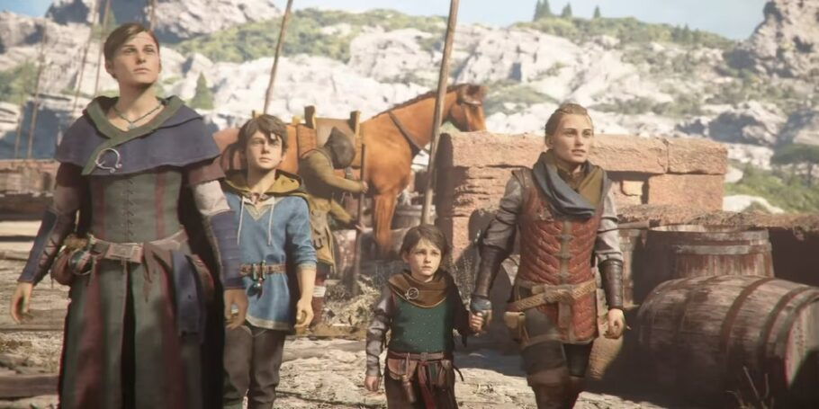

A SEQUÊNCIA DO PREMIADO A PLAGUE TALE: INNOCENCE
Embarque em uma jornada emocional e de tirar o fôlego. Siga Amicia e o irmão dela, Hugo, em uma nova missão perigosa, fazendo todo o possível para sobreviver a um mundo brutal. Desenvolvido pelo Asobo Studio para Xbox Series X|S e Windows 10.
Semelhante ao antecessor, Requiem é um jogo de ação e aventura jogado a partir de uma perspectiva de terceira pessoa. No jogo, o jogador assume o controle da personagem Amicia e deve enfrentar tanto soldados da Inquisição Francesa, quanto hordas de ratos famintos que estão espalhando a Peste Negra. A jogabilidade é bastante semelhante ao primeiro jogo, embora o sistema de combate seja significativamente expandido. Amicia está equipada com armas como faca para usar contra combates diretos ou ataques furtivos, uma funda que pode ser usada para atirar pedras e uma besta que lhe permite derrotar facilmente oponentes com armadura ou a longa distância. Dardos de besta, potes de arremesso e pedras podem ser combinados com misturas alquímicas. Além de acendedor e extinguis, que permitem ao jogador acender e apagar chamas respectivamente, o jogo apresenta alcatrão, que aumenta o raio da fonte de luz, podendo ser usado para incendiar inimigos
Enredo
Premissa
Seis meses após os eventos do primeiro jogo, os irmãos Amicia e Hugo de Rune devem viajar para o sul da França em busca de uma ilha que possa fornecer uma cura para a misteriosa doença sanguínea de Hugo. Hugo é frequentemente dominado por seus novos poderes, enquanto Amicia deve enfrentar o trauma emocional de matar inimigos e outras ações feitas para proteger a si mesma e a seu irmão.
Trama
Amicia, Hugo, Beatrice e Lucas fogem de sua província natal de Guiena, sudoeste da França — devastada pela peste e pela guerra —, e seguem rumo ao sudeste até à cidade de Provença, onde uma organização de alquimistas chamada de "Ordem" prometeu fornecer refúgio à família De Rune. Chegando à cidade, encontram o representante local da Ordem, magister Vaudin. No entanto, a mácula de Hugo começa a evoluir novamente, enquanto que Amicia e Lucas descobrem rapidamente que os ratos e a praga também seguiram até Provença. As tentativas de Beatrice e Vaudin de tratar Hugo serviu apenas para exacerbar sua condição. Vendo a situação da cidade se deteriorando, Vaudin providencia para que o grupo parta de barco para a sede da Ordem em Marselha, mas a cidade é subitamente atacada por uma enorme quantidade de ratos que deixa toda a cidade em ruínas.